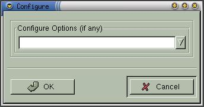

|
|
Anjuta Manual version 0.1Copyright (c) Kh. Naba Kumar Singh |
| Contents | Index | Shortcuts |
| PREV:Managing make files | UP:Concept of project management | NEXT:Debugging |
The basics:
Executable of a project is generated in two steps:
These steps collectively is called Building executable. Generally, some other not-so-obvious steps may also involve in the build process, but for the shake of simplicity , we shall consider only the above two steps.
Compiling is the step in which so called object files are generated from their corresponding source files. For instance, a source file helloc.c, after compilation, will generate hello.o. Basically you don't worry about these object files. Just consider them as an intermediate step involved in generating the final executable.
Once the object files (*.o files) are ready, they are all linked together ( along with the libraries ) with a linker (a program that links) to generate the final executable. Obviously, this step is called Linking.
In a project, the individual files can be compiled separately into object files (*.o files). As I have already told, you don't have to worry about these object files, but sometimes it becomes handy to compile the file first (especially, to make sure there is no syntax error). Building the whole project takes lots of time, especially, for large projects. Therefore, you will be doing lots of edit-compile-edit-compile-.... while developing the project.
To compile a file, activate the menu item Build->Compile or click the compile icon in the extended tool-bar. This will compile the currently active file.
There is no separate link command with Anjuta, simply because it is not necessary. The build process will compile all the source files and link them together along with the libraries. Of course, build command won't recompile those files which are up to date (This is called dependency check). Naturally, if you have compiled all the files individually, then the only thing build does is linking. Even this linking will be skipped, if you have already built the project and no dependent file has been modified.
So how exactly does the dependency check influence the project development? If you have modified a file, then all the source files that depends on this modified file are recompiled. Conversely and to be more specific, any file (not only the object files and executable) in the project is check for dependency during the build process. If it is found that this file is dependent on some other file which has been modified, this particular file will be re-generated.
Now, since you have got a rough idea about the dependency check, can you imagine how your life (as a programmer) would be if there had been no dependency check? If you cannot answer this question, then will know the answer when you start developing big projects.
Build will build in the source directory (to generate the executable). While Build all will build the whole project. All the subdirectories, including the source directory, are recursively built.
To build the executable, activate the menu item Build->Build. And to Build all, activate the menu item, Build->Build All.
Build distribution will build a distribution tarball package ( *.tar.gz) and put it in the top level project directory. Copy the source tarball from there to a save place for distribution. To build the tarball distribution of the project activate Build->Build Distribution.
Activating the menu item Build->Install will install the project in your computer. Note: You must be logged in as root to do system install. Also note that for a gnome application to use the pixmaps in the project, it must be system installed. Otherwise, when you execute the gnome program ( in your project ), you will get lots of "Pixmaps not found" errors.
Activating Build->configure will run the configure script found in the top level project directory. Configure script will determine the system configuration of your system and create some build files (such as Makefiles and config.h). This is necessary, because your program may depend on some of these configurations. Unless and until you run configure, you can not start building the project.
Configure script is, usually, run only once at the beginning of the first build process, for example, just after you have un-tared a source tarball of a project distribution. After that, configuration is automatically handled by the subsequent build processes. If you have used the Application wizard to create the application, then you won't need to run the configure yourself. The wizard will run it as a part of its project generation process.
You can also supply additional options to the configuration script when your are prompted for them. Just after activating the configure menu item, you will be prompted with a dialog box shown below:

Enter the options (or leave it blank to go for the defaults) and click OK. To know what are the available options for the configure script, type "--help" in the option entry box and click OK. You will get the required help in the message window.
It is not necessary that you should run configure only once. You can run it any time, usually when you need to change the configuration options. One thing you must note is that, if you have modified the config.h file in the top level directory, running configure again won't overwrite it.
The name is slightly superfluous. But that is almost what it is. Auto generation consists of two steps, running automake and then running autoconf. If an executable autogen.sh is found in the top level project directory, this file will be executed in lieu of the above two steps. Like configuration, autogeneration is automatically handled by the build process. But you can always run it when you find it difficult to configure the project (lots of errors coming out because of mis-synchronization after modifying lots of build files). One more thing with autogeneration, unlike configuration, you don't need to run it even once. In fact, you don't need to run it at all. I don't know why I put it there, but sometimes it becomes handy.
Activate the menu item Build->Auto generate to auto generate the project.
Read the Info pages of Automake and Autoconf for more details on how these work.
There isn't much to say about Clean. It cleans the project and leave the project in a state that needs Build All to be performed. It deletes all the files generated by the build all process, including all the object files (*.o files) and the executable(s) in the source directory (and other directories). You need to run Build All after you clean your project.
Activate Build->Clean to clean the project.
Similarly, there isn't much to say about Clean all (also called Clean distribution or clean dist, in short). It cleans the project and leave the project in a state that needs Configure and Build All to be performed. It deletes all the files generated by the Configure and Build all processes, including all the object files (*.o files), executable(s) and Makefiles. In the other words, it leaves the project as though it has just been un-tared from the distribution tarball (hence, the name Clean dist). You need to run Configure and Build All, in the given sequence, after you do Clean all to the project.
Activate Build->Clean All to clean all the project.